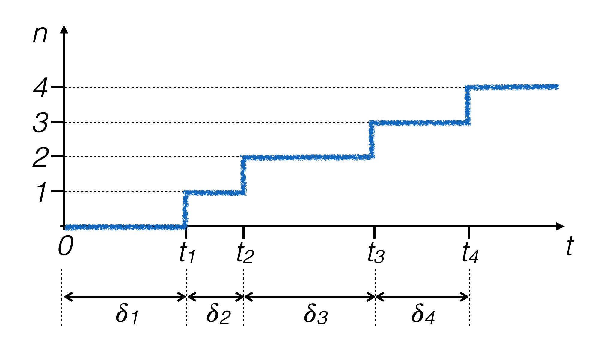
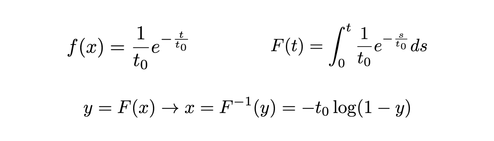
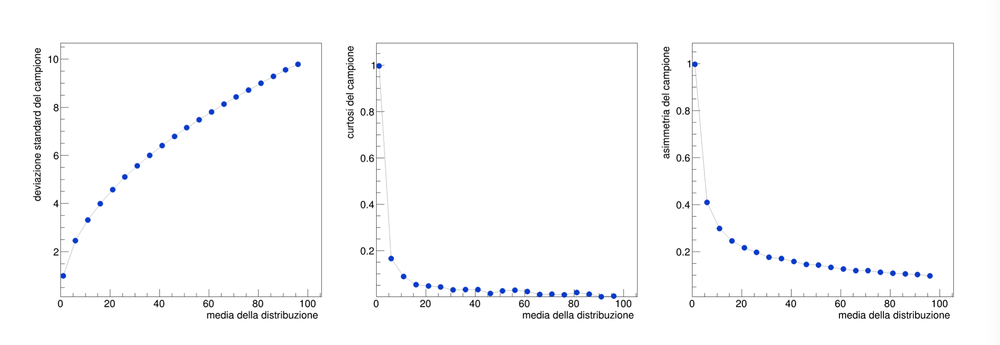

Lezione 7: La distribuzione di Poisson
Contents
Lezione 7: La distribuzione di Poisson¶
7.1 Rappresentazione di andamenti y vs x: i TGraph¶
gli istogrammi mostrano una singola variabile fisica
talvolta è utile visualizzare coppie di misure (x,y)
in
ROOTla classe che si utilizza per farlo è ilTGraph

7.1.1 Definizione di un TGraph¶
come sempre, bisogna includere la libreria corrispondente:
#include "TGraph.h"
ricordando di aggiungere le opzioni di
ROOTal comando di compilazione:> c++ -o programma `root-config --cflags --glibs` programma.cpp
un oggetto di tipo
TGraphsi definisce semplicemente:TGraph g_sigma ;
l’oggetto è vuoto: non contiene alcuna variabile
esistono altri costruttori oltre a quello di default, che permettono di inizializzare un
TGraphcon un insieme di coppie di punti nulli oppure a partire da array già riempiti
7.1.2 Riempimento di un TGraph¶
un
TGraphviene riempito con il metodoTGraph::SetPoint (Int_t i, Double_t x, Double_t y), che prende in input:l’indice del punto da riempire, che per il primo punto è 0
il valore della variabile x
il valore della variabile y
g_sigma.SetPoint (g_sigma.GetN (), 11.5, 7.4) ;
in questo caso, come primo argomento si utilizza il metodo stesso
TGraph::GetN (), perché per unTGraphche contieneNelementi l’indice dell’ultimo elemento salvato èN-1
si noti che
ROOTridefinisce le variabili numeriche delC++(sostituendointconInt_tedoubleconDouble_tin questo caso), perché le variaibli definite internamente daROOThanno una dimensione in byte convenzionale
7.1.3 Disegno di un TGraph¶
come nel caso di
TH1F, unTGraphsi disegna su unTCanvas:TCanvas c1 ("c1", "c1", 100, 100, 1000, 1000) ; c1.SetLogx () ; g_sigma.Draw ("ALP") ; c1.Print ("sigmaTrend.png", "png") ;
le opzioni passate al metodo
Drawrichiedono ditracciare gli assi (
A)congiungere i punti con una linea (
L)disegnare i marker ad ogni punto (
P).
7.1.4 Qualche opzione grafica¶
anche per un
TGraph, si possono impostare diversi parametri grafici:g_sigma.SetMarkerStyle (20) ; g_sigma.SetMarkerColor (kAzure - 1) ; g_sigma.SetLineColor (kGray + 1) ; g_sigma.SetMarkerSize (2) ; g_sigma.GetHistogram ()->GetXaxis ()->SetTitle ("numero di eventi nel campione") ; g_sigma.GetHistogram ()->GetYaxis ()->SetTitle ("deviazione standard") ;
il metodo
TGraph::GetHistogram ()restituisce il puntatore all’istogramma di servizio creato daROOTper comporre graficamente il disegno
7.2 I processi poissoniani¶
Un evento fisico che produce eventi casuali distribuiti nel tempo è di carattere Poissoniano se:
gli eventi sono indipendenti uno dall’altro
la probabilità che un evento accada non dipende dall’istante di misura
Se una sequenza di numeri casuali corrisponde ai tempi di un processo Poissoniano, allora è vero che:
se la probabilità che l’evento accada dell’unità di tempo è p, il numero di eventi osservati in un intervallo di tempo τ segue la distribuzione di probabilità di Poisson:
le differenze di tempo δi fra due eventi successivi seguono una distribuzione di densità di probabilità esponenziale 
7.2.1 La generazione di eventi secondo una distribuzione di Poisson¶
per ottenere eventi pseudo-casuali distribuiti secondo una distribuzione di probabilità Poisson si può:
generare eventi secondo una distribuzione di densità di probabilità esponenziale con tempo caratteristico t0 unitario
contare quanti eventi caschino in un determinato intervallo \(\tau\) scelto con lunghezza \(\lambda\), se \(\lambda\) è la media di eventi attesa dalla distribuzione di Poisson
7.3 Ripasso: la generazione di eventi secondo un distribuzione f(x) con la tecnica della funzione inversa¶
sia x una variabile casuale con pdf f(x) continua
sia F(x) la distribuzione di probabilità cumulativa (cdf)
se F(x) è strettamente crescente allora la variabile y = F(x) ha distribuzione uniforme (si dimostra usando la regola per il cambio di variabile in una pdf)
generare eventi pseudo-casuali con distribuzione uniforme in y equivale a generare eventi pseudo-casuali lungo x con distribuzione f(x)
7.3.1 L’algoritmo della funzione inversa¶
si calcolano analiticamente F(x) e la sua funzione inversa F -1(y)

si generano numeri pseudo-casuali yi con distribuzione uniforme fra 0 ed 1 lungo l’asse y
per ogni evento generato, si calcola xi = F -1(yi) e si utilizza quel valore come numero casuale generato
dove f(x) è più alta F(x) è più ripida, quindi il numero di numeri pseudo-casuali generati nei due intervalli Δy1 e Δy2 risulta proporzionale all’area sottesa dalla curva f(x) sopra i due intervalli con dimensione Δx, rispettivamente, che è l’obiettivo che si vuole ottenere.
7.3.2 Il caso esponenziale¶
nel caso della distribuzione esponenziale, le richieste necessarie per l’applicazione del metodo sono soddisfatte, perché se ne conosce la primitiva e si può invertire: 
in questo caso, la variabile y è un numero pseudo-casuale che segue una distribuzione di densità di probabilità uniforme fra 0 ed 1 (l’intervallo di valori che può assumere un esponenziale descrecente definito sull’asse positivo)
7.4 Le caratteristiche della distribuzione di Poisson¶
con gli strumenti descritti, si possono generare campioni di numeri pseudo-casuali di tipo Poissoniano e verificare le caratteristiche della loro distribuzione, attraverso lo studio dei momenti dei campioni generati, disegnati con
TGraphdiROOT:
